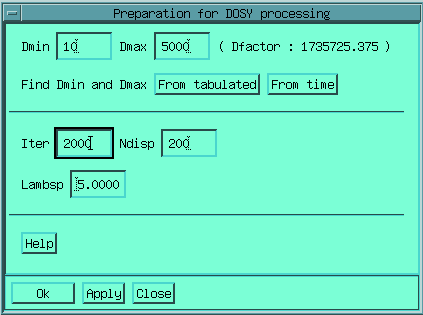

This menu is defined in the /usr/local/gifa/macro/env_dosy.g macro and permits to access most of the needed commands.
Equivalent to calling the load macro, which permits to read a plain ascii file into the 1D buffer. Raise to square the content of the 1D buffer, needed when using tabulated gradient values, before loading them into the TAB buffer (performed by copying the data temporary to DATA). The PUT TAB command which copies the current 1D buffer to the TAB buffer, used for tabulated Laplace transform.
Displays the content of the 1D buffer as a tabulated data-set. Xi, Yi are plotted, where Xi is taken from the TAB buffer, and Yi from the current data-set.
Evaluate the noise of the experiment in a signal free region. Needed by the MaxEnt processing. Actually calls the evaln.g macro.
Brings
a form that permits to describe the acquisition parameters, in order to
determine the correct diffusion coefficients in
unit (sets DFACTOR).
Chose the used pulses sequence and the observed nucleus. Enter the length, the
duration of the diffusion delay, the value in G/cm of a gradient coded as 1 in
the TAB buffer and the shape of your gradient pulse (shape defined by ascii
file can be used).
Brings a form that permit to set most of the relevent parameters for DOSY processing.

Evaluates the current 1D buffer as one exponential damping, sampled as described in the TAB buffer.
As dosyfit, but assuming 2 exponential dampings.
Starts the MaxEnt processing for computing the inverse Laplace transform of the current data-set, considered as a regularly sampled one. Equivalent to the INVLAP command.
Increments ITER and continue the preceding processing, uses the INVLAPCONT command.
Starts the MaxEnt processing for computing the inverse Laplace transform of the current data-set, considered as a tabulated sampled one. Equivalent to the INVTLAP command.
Incremnts ITER and continue the preceding processing, uses the INVTLAPCONT command.
This
will bring a box in which the user can simply enter the parameters for the
dosy2d processing.
The dosy2d processing requires 4 parameters : nature of the data-set (regular
or tabulated); the processing to do (MaxEnt, fit or fit with 2 components); the
final size and a noise threshold which permits to determine which slices will
be processed. Count buttom determines how many columns will be
processed (initial data-set higher than the noise level time the threshold).
Starts the dosy2d macro which performs the complete processing of the current
2D data-set.
From
this form you can set-up parameters for the processing of 3D DOSY datasets (set
of 2D, wighted by the diffusion). The processing is done on-file.
The parameters are the same than for 2D. You will have to give a input filename
(from which the data will be taken) as well as the output filename.Starts the
dosy3d or te dosy3d_on_file macros which perform the complete processing.